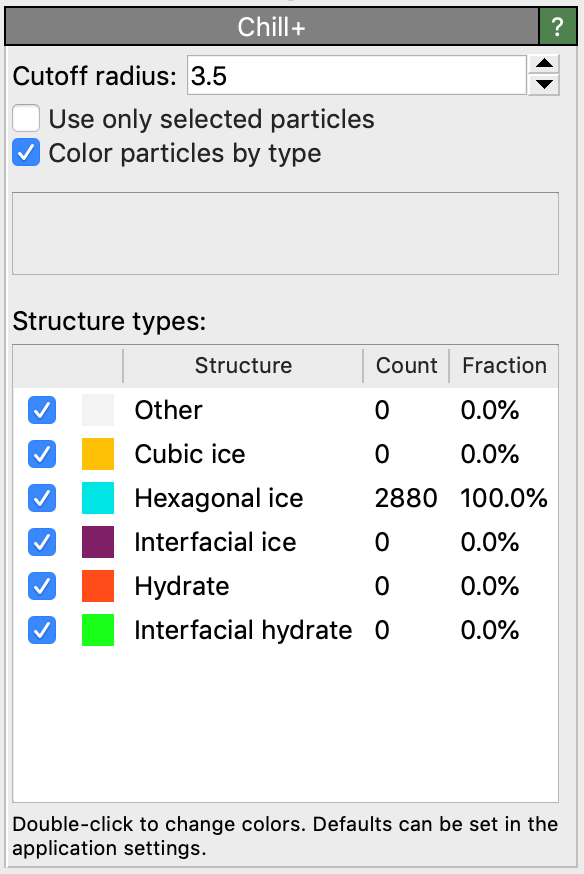

Chill+
This modifier classifies the local structure of particles using the Chill+ algorithm, which allows identification of hexagonal ice, cubic ice and gas hydrates. This structure identification method has been described in
Please cite this paper when you use this structure identification algorithm in your work.
{kind=link}
The Chill+ algorithm classifies particles based on their local environment. Solid water phases usually have 4-coordinated water molecules, so considering two neighboring water molecules (O–O distance less than 3.5 Å), we may define a cluster of 8 molecules by these two molecules and their neighbors. If one looks at these molecules along the axis of the bond between them, they can be characterized by whether all the six particles spreading out from this bond are visible (staggered bond), or whether the neighbors of the closest molecule blocks the view of the neighbors of the farthest molecule (eclipsed bond). It does so by taking the correlation of the local ten-Wolde bond order parameter \(q_{3m}\) between the pair of atoms. Precisely, the structure is determined by whether the correlation is between 0.25 and -0.35 (eclipsed) or less than -0.8 (staggered). An atom in bulk has four bonds that are either eclipsed or staggered, and the structure is determined based on how many it has of each, by the criteria below.
Hexagonal ice: 4 bonds, of which 1 eclipsed and 3 staggered.
Cubic ice: 4 bonds, of which 4 staggered.
Interfacial ice: 4 bonds of which 2 or 3 staggered. (Hexagonal takes preference if 3 staggered and 1 eclipsed)
Gas hydrate: 4 bonds of which 4 eclipsed.
Interfacial gas hydrate: 4 bonds of which 3 eclipsed.
Particles not falling into one of these categories are classified as “Other”.
The modifier sets the Structure Type property for each particle, which is encoded as an integer value:
0 = Other, unknown coordination structure
1 = Hexagonal ice
2 = Cubic ice
3 = Interfacial ice
4 = Gas hydrate
5 = Interfacial gas hydrate
Note
The modifier requires just the oxygen atoms as input or molecule beads from coarse-grained water simulations, not the hydrogen atoms. This can be done by either deleting all hydrogen atoms first or selecting the oxygen atoms and activating the option Use only selected particles option of the Chill+ modifier.
Furthermore, hexagonal ice structures can also be identified in OVITO using the Identify diamond structure and Polyhedral template matching modifiers.
Credits
The original code for this modifier has been contributed to the OVITO project by Henrik Andersen Sveinsson.
See also
ovito.modifiers.ChillPlusModifier (Python API)